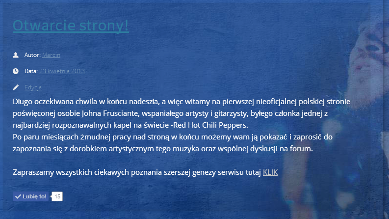
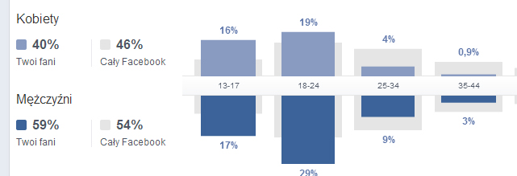
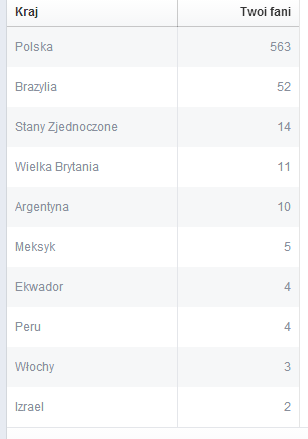
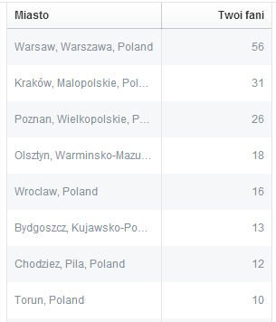
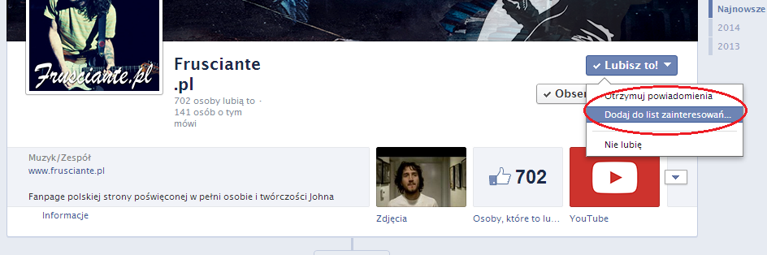
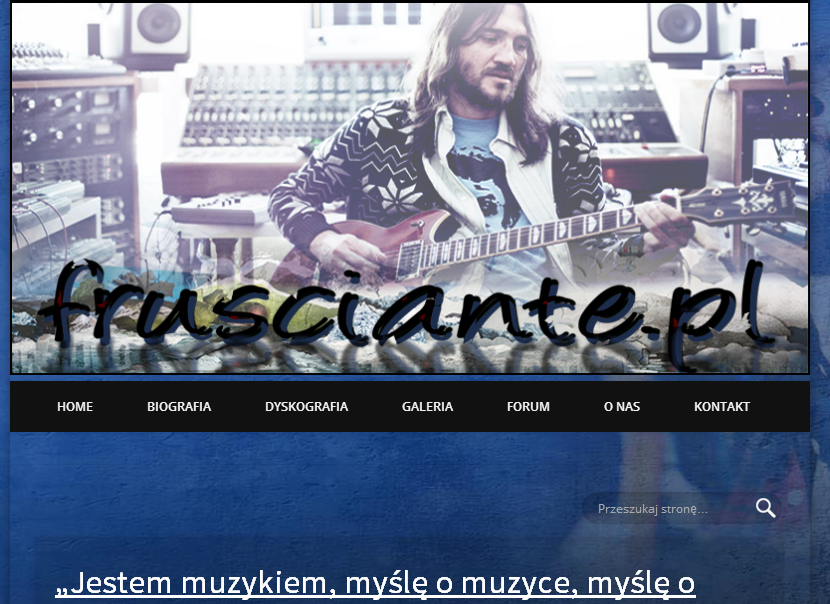

Witam, z góry proszę o wybaczenie z powodu braku oficjalnego stylu w tym wpisie, lecz chciałem aby był on dość luźny i nie raził zbyt podniosłym tonem…
Dziś mija równo rok od 1 wpisu na tej stronie, który wykonałem. Co prawda sama strona istniała już około miesiąc wcześniej, lecz wtedy jeszcze mało kto tu zaglądał… Wiele się przez ten rok zmieniło, od samego designu strony, przez skład redakcji, aż po sposób w jaki dzielimy się z Wami wszelkimi informacjami związanymi z Fru.

Pierwszy wpis na stronie.
Podsumowując ten rok, zacznę od tego, co lubię najbardziej, czyli od statystyk :)
Zaczniemy może od fanpage’a.
Wczoraj (22.04.2014) stuknęło nam 700 lajków. Chyba nie spodziewałem się, że w tak krótkim czasie polubi nas tyle osób. Poniżej wklejam zdjęcie statystyk, w których możecie zobaczyć ile procentowo jest osób płci męskiej oraz żeńskiej, oraz jaki wiek dominuje:


Jak sami widzicie wielu naszych fanów z zagranicy, w szczególności z Brazylii.
Zaś miasta, w których są poszczególni fani prezentują się tak:

Teraz trochę statystyk ze strony. O ile można im wierzyć to w ciągu całego roku nasza strona miała ponad 88 tysięcy odsłon i ponad 33 tysiące odwiedzających. Podejdźcie raczej z dystansem do tych statystyk – zapewne sporo z tych odwiedzin nabiłem ja sam oglądając stronę…:-)
Korzystając z rocznicowej okazji chciałbym Was gorąco zachęcić do zrobienia dwóch rzeczy. Po pierwsze do dodania Frusciante.pl do listy zainteresowań na Facebooku oraz do zaznaczenia opcji Powiadomienia. Algorytmy tego serwisu zmieniają się niestety w takim kierunku, że im dany fanpage ma większą liczbę fanów, tym mniejszy procent z nich widzi posty w Aktualnościach. Jeśli więc nie chcecie aby nasze newsy Wam uciekały, skorzystajcie z tych dwóch opcji.
Można się spodziewać, że proces komercjalizacji Facebooka będzie się rozwijał, dlatego kolejna rzecz do której Was namawiam to aktywność na naszym forum. To pozwoli nam na stworzenie społeczności, która będzie niezależna od zewnętrznych kanałów komunikacji i narzucanych przez nie ograniczeń.

Patrząc wstecz na pierwszy rok istnienia Frusciante.pl chciałbym dodać parę słów podziekowania od siebie… Przede wszystkim chciałbym podziękować Arturowi Krzyżańskiemu, bez którego ta strona by nie istniała. To on przez cały czas pomagał nam ją budować i modyfikować. Polecamy serdecznie jego usługi!
Podziękowania kieruję w stronę wszystkich redaktorów i tłumaczy, którzy pracowali przez ten rok nad zawartością Frusciante.pl. Przede wszystkim ukłony należą się Pawłowi, który to razem ze mną stworzył tą stronę i pomógł rozwinąć ją do obecnej postaci. Do dziś można go spotkać na naszym forum udzielającego się w wątkach.
Chciałbym też podziękować Klaudii, która to na samym początku podsunęła mi pomysł stworezenia serwisu dla fanów Johna Frusciante i równie pięknie jak John potrafiła opisywać wszelkie aspekty związane z nim. Po jakimś czasie znikła ze świata wirtualnego – Klaudia jeśli to czytasz, to pozdrawiam Cię serdecznie.

Pierwotny wygląd naszej strony
Wyrazy uznania należą się Patrycji, która zawsze tłumaczyła dla nas teksty i wspierała stronę oraz forum. Przy okazji, szybkiego powrotu do zdrowia Patrycja! Ukłony również w stronę Wandy, która początkowo była fanką na naszym fanpage’u ale z czasem stała się osobą odpowiedzialną praktycznie za wszystkie teksty i tłumaczenia, która ostatnio możecie czytać na naszej stronie oraz fanpage’u.
Szacunek także dla Adama Kukielewskiego, który to podrzucał (i nadal podrzuca) nam wiele ciekawych newsów i dbał o fanapge’a. Równie pozytywnym ex-redaktorem jest Ignacy Puśledzki – wielki fan Fru i autor bardzo ciekawych tekstów.
Chciałbym też podziękować Oliwii za pomoc przy wszystkim i wsparcie.
Wielkie uściski i podziekowania dla SoundUniverse oraz RHCPmanii za wszelkie wsparcie, wzajemną promocję i pomoc.
Na koniec oczywiście dziekuję Wam wszystkim. Nie zdajecie sobie sprawy ile pozytywnej energii, słów zachęty i wsparcia od Was dostaliśmy przez ten rok. To dla nas bardzo ważne, dlatego zawsze jesteśmy otwarci na Wasze opinie, uwagi, pomysły, współuczestnictwo w tworzeniu Frusciante.pl. Ale o tym może dalej…
Rok minął, ale my patrzymy już w przyszłość i chcemy realizować kolejne pomysły! Potrzebni nam jednak ludzie, którzy pomogą nam to zrobić! Szukamy osób, które chcą dołączyć do redakcji Frusciante.pl i pomóc nam w tym, by ta strona była jeszcze ciekawsza i dalej się rozwijała.
Jeśli Twoją pasją jest muzyka, a zwłaszcza muzyka Johna Frusciante, jeśli nie prześladowała Cię w szkole wizja lekcji języka polskiego, jeśli nie przeraża Cię pisanie, tłumaczenie (przede wszystkim z angielskiego), jeśli czujesz się swobodnie w środowisku mediów społecznościowych, jeśli masz trochę wolnego czasu, trochę chęci i trochę samodyscypliny czekamy właśnie na Ciebie!
Szukamy redaktorów, tłumaczy, researcherów, ale jesteśmy otwarci na wszelkie pomysły i propozycje współpracy – może masz pomysł, który nas zaskoczy i będzie ciekawy dla naszej społeczności? Zdjęcia, grafiki, komiks, filmy, a może coś jeszcze? Czekamy z niecierpliwością!
Marcin Rudnik i redakcja Frusciante.pl